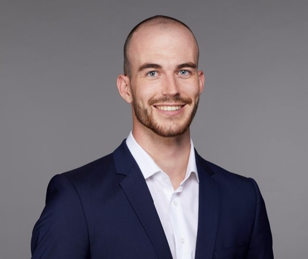
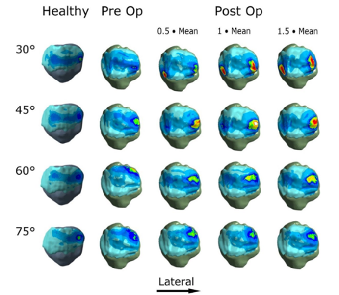
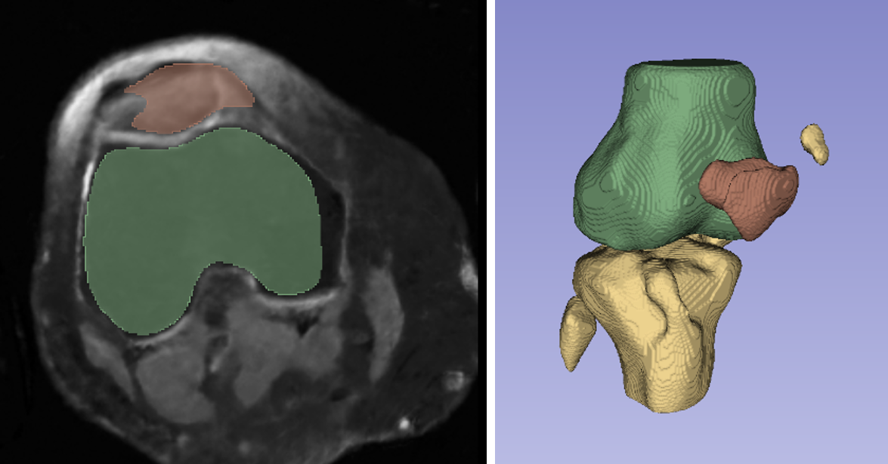

Michael Wehrli

I'm a first-year PhD Candidate at the Center for medical Image Analysis & Navigation (CIAN) at the University of Basel, Switzerland. My PhD is supervised by Philippe Claude Cattin and Carol-Claudius Hasler.
I hold a Bachelor's and Master's degree in Mechanical Engineering from ETH Zurich, completed in January 2022, with a focus on computer vision and biomedical engineering. Before starting my PhD, I gained professional experience in data analytics and AI consulting at BearingPoint.
Research

Trochlear Dysplasia (TD) is a common malformation in adolescents, leading to anterior knee pain and instability. Surgical interventions such as trochleoplasty require precise planning to correct the trochlear groove. However, no standardized preoperative plan exists to guide surgeons in reshaping the femur. This study aims to generate patient-specific, pseudo-healthy MR images of the trochlear region that should theoretically align with the respective patient’s patella, potentially supporting the pre-operative planning of trochleoplasty.
Open Master Theses

Biomedical Engineering Master Thesis: Finite Element Validation of retropatellar contact pressure in AI generated trochleas
University Children’s Hospital Basel (UKBB) is a world leading hospital in the treatment of trochlea dysplasia (TD) – a malformation of the femur. This thesis at the Center for medical Image Analysis and Navigation (CIAN) in collaboration with the UKBB and the University of Strasbourg aims to evaluate different trochlea shapes found by generative AI approaches. The project will involve working with open source Finite Element Model (FEM) software (SOFA). The primary objective is to evaluate a stress-strain distribution on the backside of the patella. This evaluation would represent a significant step in validating generated trochlea shapes as potential solutions for improving outcomes in patients with trochlea dysplasia.
Reference: Kaiser et al. (2022). "Deepening trochleoplasty may dramatically increase retropatellar contact pressures—a pilot study establishing a finite element model." Journal of Experimental Orthopaedics, 9(1), 76. DOI: 10.1186/s40634-022-00512-9
Official Form will follow soon, if you are interested, reach out!

Biomedical Engineering Master Thesis: Automated Detection of Trochlea Dysplasia in Knee MRI Images Using Deep Learning
This master thesis is already taken, but if you are interested in similar projects, reach out and we can discuss potential projects.

Medical Master Thesis: Super Resolution Knee MRI Bone and Cartilage Segmentation Project
This master thesis is already taken, but if you are interested in similar projects, reach out and we can discuss potential projects.